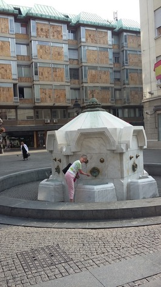
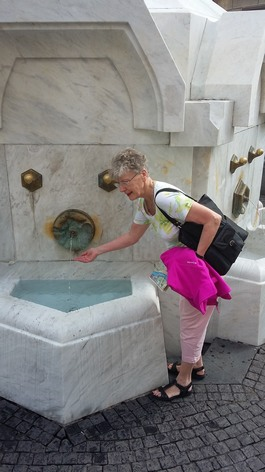
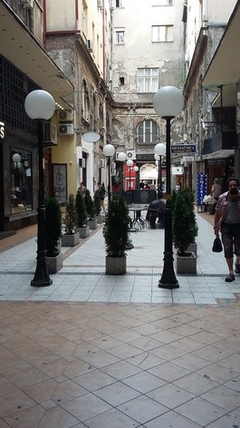
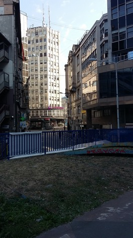
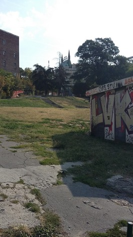
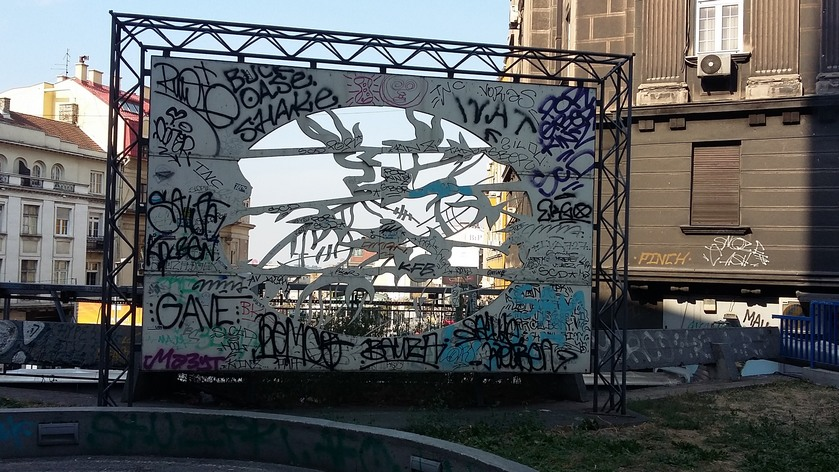
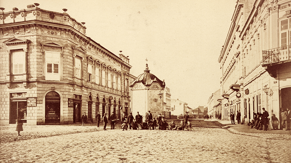
Le chemin de la gare des autobus de Belgrade
Pour aller à la gare des bus depuis notre hôtel (Royal Inn) de la Kralja Petra, il faut suivre la voie piétonne Kneza Mihajla jusqu'à la fontaine Delijska česma, puis tourner dans la Karadžića. On suit ensuite la rue de l'Impératrice Milica, qui malgré son nom imposant traverse un quartier populaire, où fleurissent les tags (ceux en cyrilliques sont en minorité!) et où on aperçoit au loin l'enseigne du prestigieux Hôtel Moskva.
La fontaine Delijska ("cavalerie légère" en turc) est la troisième à cet emplacement. Construite en 1987, en marbre de Prilep (arch. Pr.Alexandre Deroko) dans le style "national serbe". La première fontaine date de 1902 (photo).
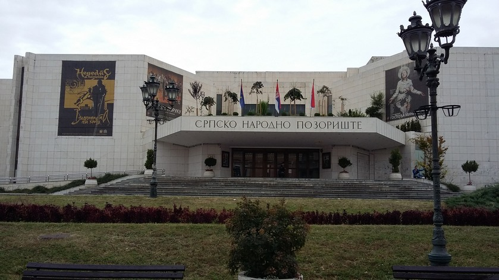
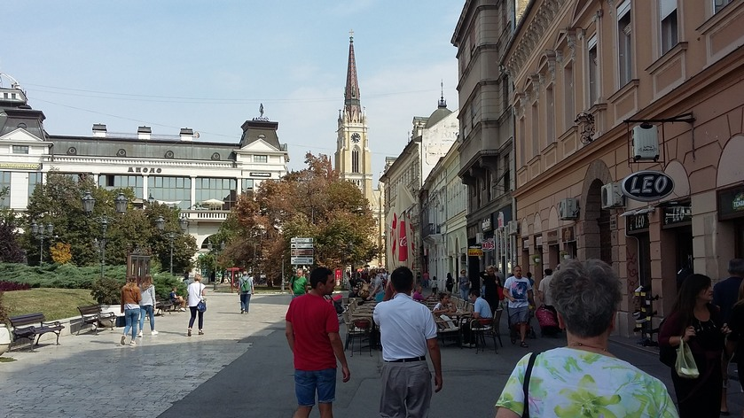
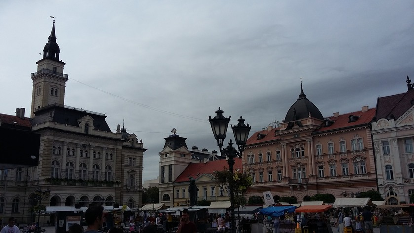
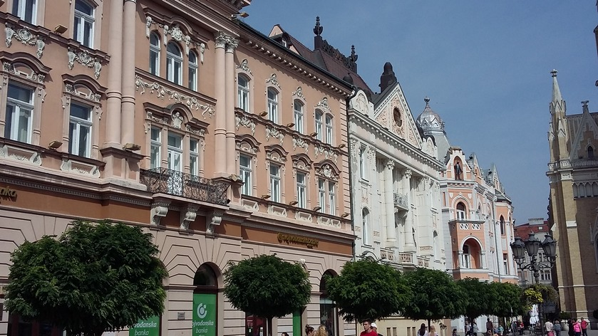
Novi Sad: le Théâtre national serbe et la Place de la Liberté
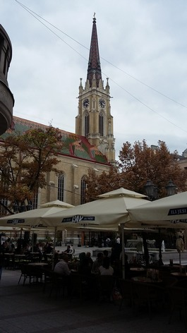
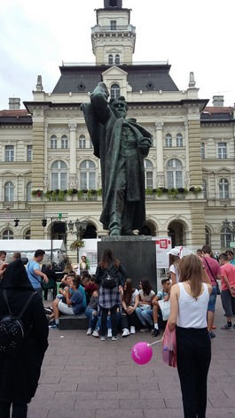
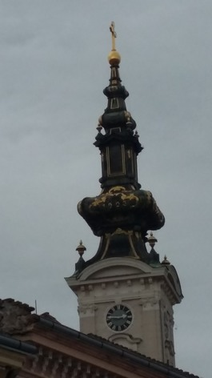
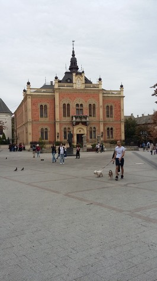
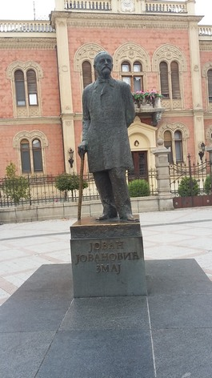
Cathédrale Notre-Dame, Statue du maire Svetozar Miletić par Ivan Meštrović, Clocher de Saint-Georges, Palais épiscopal orthodoxe, Statue du poète Jovan J. Zmaj
Mariage à la cathédrale orthodoxe Saint-Georges
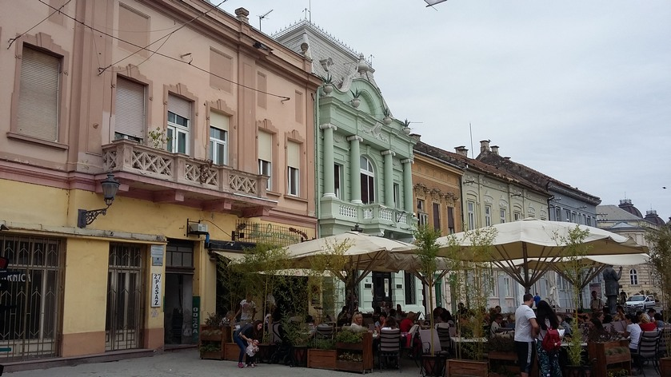
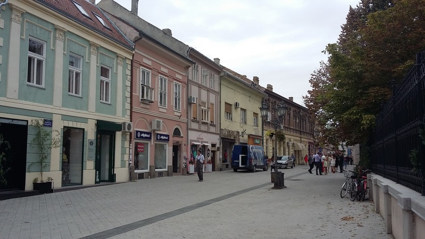
Les rues Zmaj Jovina et Dunavska aux façades multicolores
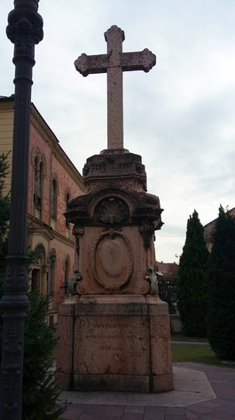
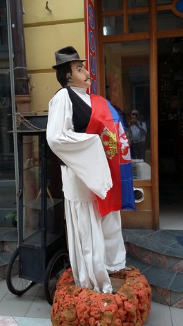
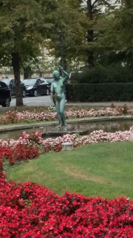
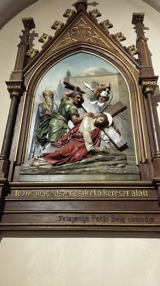
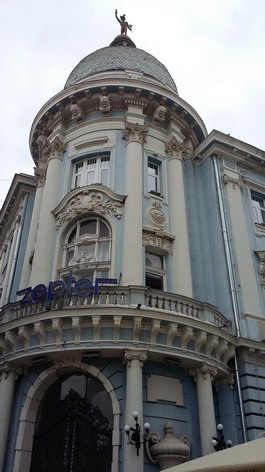
Cette croix, le plus ancien monument de Novi Grad, fut restaurée par Marie Trandafil (1816-1883), bienfaitrice de la ville, qui lui lègua le siège de la bibliothèque serbe "Matica Srpska" (3 millions de livres et manuscrits) et créa le "Parc du Danube" (cf. photo). Novi sad, capitale de la province autonome de Voïvodine en partage le caractère multi-ethnique: Le mannequin est enveloppé dans un drapeau serbe, et le chemin de croix ainsi que les vitraux de Notre-Dame portent des inscriptions en hongrois, la langue principale parlée à Subotica.
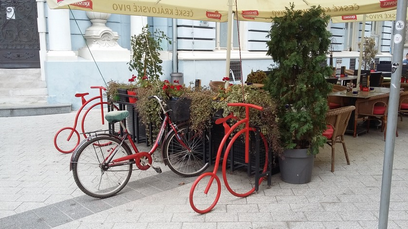
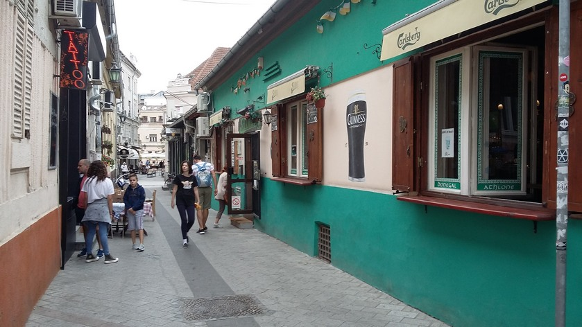
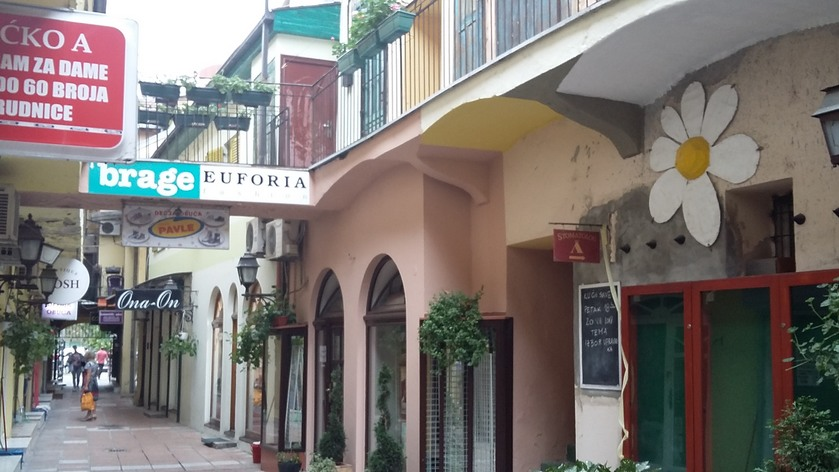
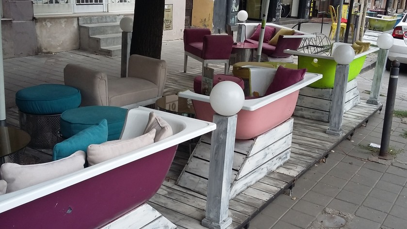
L'ingéniosité des aménageurs de terrasses de café contribue à l'atmosphère agréable qui règne sur la ville.
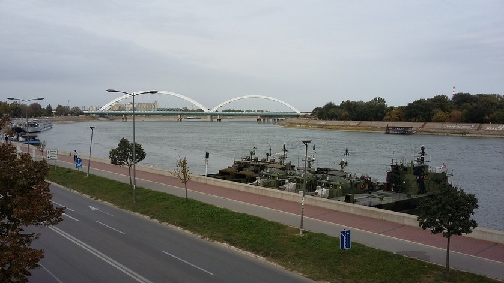
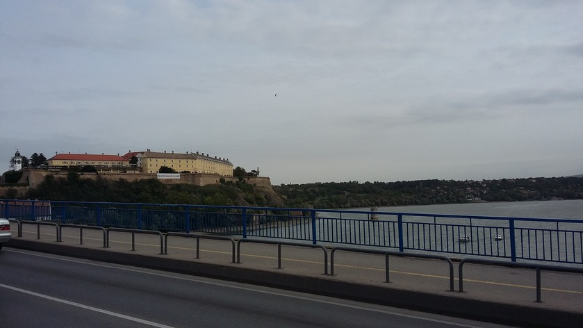
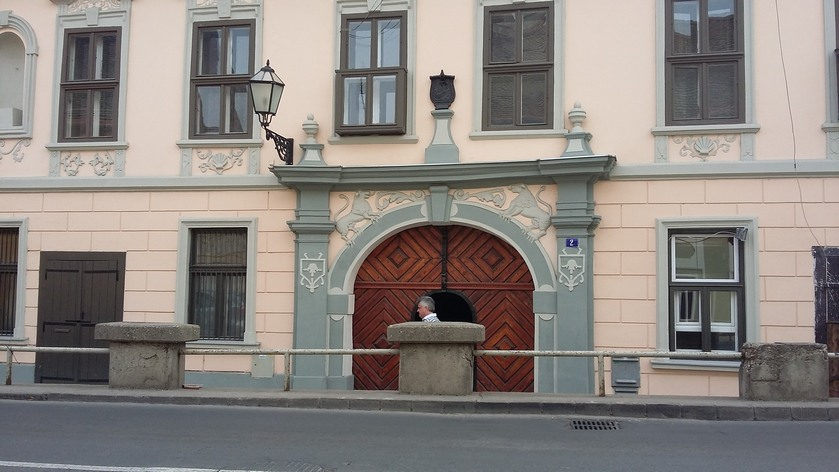
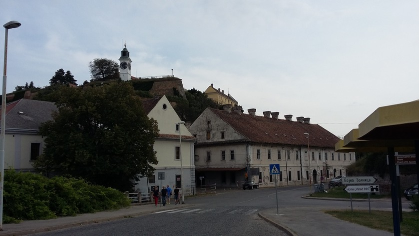
Sur l'autre rive du Danube se dresse la forteresse de Petovaradin avec sa tour de l'Horloge. Au pied, le village aux rues étroites et aux édifices baroques ne compte pas moins de 3 églises où, ici aussi, on célèbre un mariage!
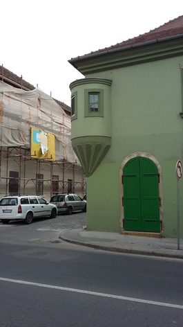
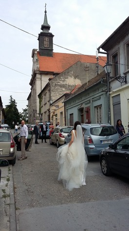
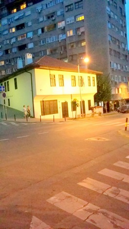
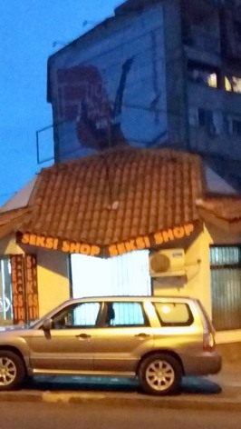
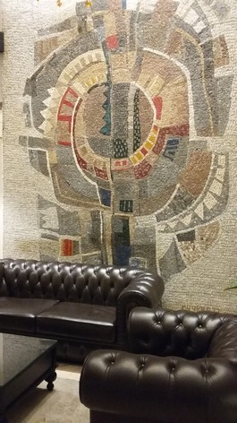
Bientôt nous remontons dans le car et nous quittons la ville qui sera la capitale européenne de la culture en 2012 pour rejoindre Belgrade. Après avoir passé un "Seksi shop" et une pimpante maison turque, nous retrouvons notre hôtel et son hall orné de mosaïques.